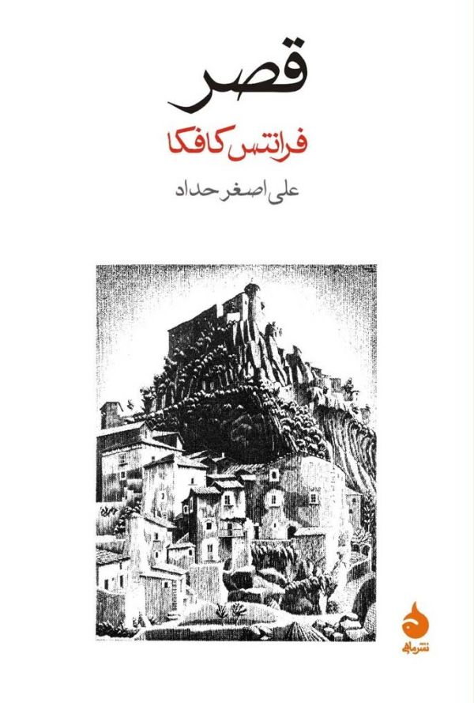
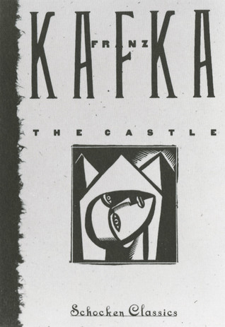
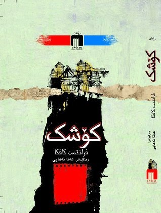
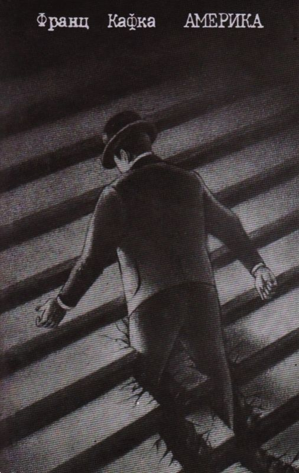
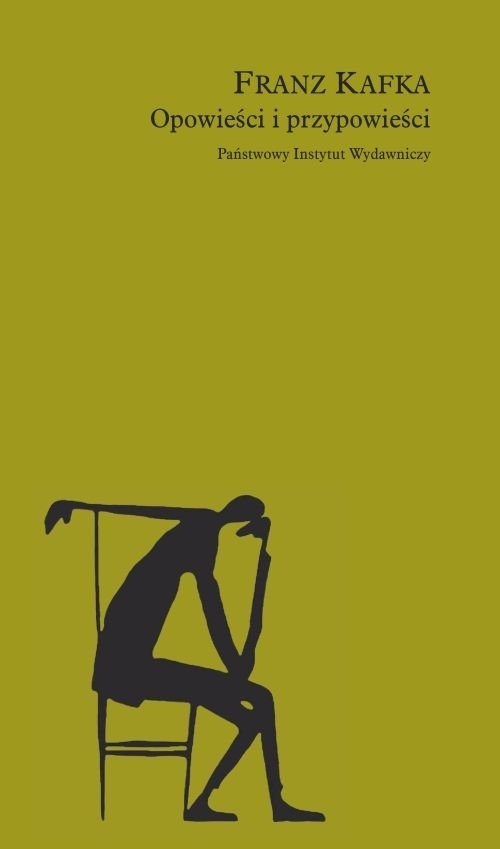

Na pierwszym planie widać drewniany most zasypany śniegiem. W mgławicy gęstej mgły. K. podnosi
wzrok i wpatruje się w górę, “w coś, co na pozór było pustką”, in die scheinbare Leere.
Dosłownie: “w stronę pozornej pustki”. K. wie, że w tej pustce jednak coś istnieje: że tam jest
Zamek. Nigdy go wcześniej nie widział, może nigdy nie przekroczy jego progu.



Proces
„Jakie to dziwne, że kiedy ktoś budzi się rano, na ogół odnajduje rzeczy na tym samym miejscu,
na którym znajdowały się wieczorem. A przecież, kiedy ten ktoś spał, w swoich snach znajdował
się przynajmniej na pozór w stanie zasadniczo odmiennym od stanu czuwania i trzeba niezwykłej
przytomności umysłu, czy raczej gotowości, by znaleźć wszystko, kiedy się otwiera oczy, by tak
rzecz, na dawnym miejscu, na tym, na którym pozostawiło się je poprzedniego wieczora”. Te zdania,
będące zasadniczym akordem Procesu, Kafka wykreślił.
Zaginiony (Ameryka)
Karl Rossmann jest małym bohaterem rodem z bajek, którego rzucono w wielki świat.
Rzeczowy, uparty, gotów na wszystko, wszystkiego ciekaw i silny. Napotyka potwory,
wiedźmy, innych chłopców i dziewczęta, policjantów i włóczęgów – ze wszystkimi
rozmawia jak dorosły, z powagą i znajomością rzeczy. Wcześniejszy wyrok, który
wydalił go z ojczyzny i oddzielił od rodziny, nie wyrządził mu krzywdy i nie
zabarwił ciemnymi kolorami świata, który w Ameryce ukazuje mu się jako przestrzeń
niezwykle rozległa i olbrzymia. „Taka wysoka!”, myśli Karl o statui bogini wolności,
kiedy statek coraz wolniej przesuwa się przed nią. Nie dziwi się, że statua trzyma
w ręku miecz, a nie pochodnię.

Opowiadania
"Kafka należy do osobliwego typu pisarzy, których wysiłek skupia się na formułowaniu i
komplikowaniu problemu, a nie na jego rozwiązaniu. Wszystkie jego dzieła reprodukują (…)
w przeróżnych odmianach jednakową sytuację zasadniczą, ich fabuła, zresztą bardzo nikła
(…) krąży w miejscu i stale powraca do punktu wyjścia - jej treścią są bowiem niekończące
się rozważania ludzi (…), jak osiągnąć cel dla człowieka nieosiągalny". Tak pisał Roman
Karst w przedmowie do wydania nowel i miniatur Kafki z 1961 roku.

Aforyzmy
Aforyzmy pozbawione są wszelkiego nadmiaru, wszelkiej przypadkowości, wszelkiej
natarczywości. Ich zdania w swojej oschłości i mylącej przejrzystości brzmią
jak ultimatum. Nie można spodziewać się po nich obszerniejszych wyjaśnień albo
powiązań między sobą. Są jak szybkie dotknięcia pędzla wprawnego mistrza, który
koncentruje się wyłącznie na tych drobnych ruchach ręki prowadzonych przez „oko
upraszczające do całkowitego ogołocenia”.
Varia
W czerwcu 1913 roku Kafka zanotował w Dziennikach: „Niezmierny świat, jaki
noszę w głowie. Ale jak oswobodzić siebie i jak oswobodzić ten świat bez rozdarcia?
Chociaż tysiąc razy lepsze jest rozdarcie niż więzienie tego świata lub pogrzebanie
razem z sobą. Po to przecież żyję, jest to dla mnie całkiem jasne”. Ale co tu należy
rozedrzeć? Myślenie czy fantazjowanie? A może jedno i drugie?
Biogram
Franz Kafka (żydowskie imię: אנשיל, Anschel; ur. 3 lipca 1883 w Pradze; zm. 3
czerwca 1924 w Kierling, Austria) – niemieckojęzyczny pisarz. Oprócz niedokończonych
powieści (Proces, Zamek i Ameryka) napisał liczne opowiadania, dzienniki i listy.
Pisma Franza Kafki w dużej części wydane zostały, wbrew jego ostatniej woli, dopiero
po jego śmierci przez Maxa Broda (1884–1968). Jego dzieła zaliczają się do kanonu
literatury światowej. Obok poetów Rainera Marii Rilkego (1875–1926) z Pragi, Alfreda
Döblina (1878–1957) ze Szczecina, Franza Werfela (1890–1945) z Pragi, Gerharta Hauptmanna
(1862–1946) z Szczawno–Zdroju, Thomasa Manna (1875–1955) z Lubeki i Bertolta Brechta
(1898–1956) z Augsburga przyczynił się do rozsławienia literatury niemieckiej na świecie.
Jednak żaden z wymienionych nie wywarł takiego wpływu na literaturę po II wojnie światowej
jak Franz Kafka. Jego prozy, opowiadań, dzienników i listów nie da się przyporządkować do
żadnych nurtów czy szkół literackich. Na całym świecie pisma Franza Kafki znajdują
interpretatorów wśród germanistów, filozofów, psychologów, teologów i wywołują niekończący
się spór egzegetyczny, któremu towarzyszą nowe edycje i przekłady, opracowania sceniczne i filmowe.